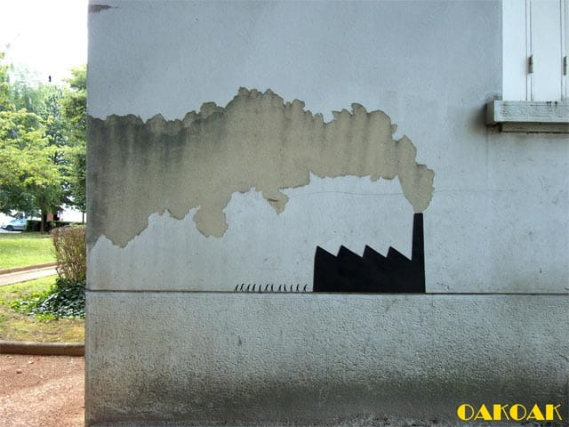

Brandt Brauer Frick - Bop
Клевая тема)
Клевая тема)
20 минут очень кайфового пианино. Альбом весь такой, но этот трек и еще City Lines нравятся больше всего.
Вообще, все этюды очень клевые!


Клевые картинки!
В iTMS можно предзаказать новых Nosaj Thing - Home и Ludovico Einaidi - In a Time Lapse!! Nosaj Thing очень крут)

Очень интересная интерпретация!

Хорошее кино! Лучше смотреть на английском.

Клевая какая штука!

Многосерийный документальный фильм о джазе, который можно посмотреть онлайн.